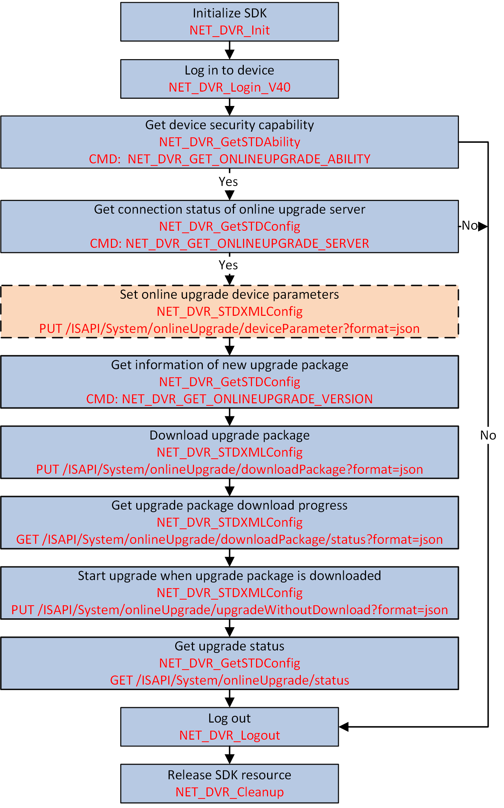

For the devices that can connect to Guarding Vision, you can online
upgrade their firmware via Guarding Vision, and get the upgrade progress. Besides, in the
condition of bad network, you can also enable automatic download of upgrade package in the
background to improve the upgrade speed.

Figure 1 Programming Flow of Online
Upgrading Device via Guarding Vision
-
Call NET_DVR_GetSTDAbility with the
command of NET_DVR_GET_ONLINEUPGRADE_ABILITY (command No.:
9309) to get the device support online upgrade capability set, and check if the
device support this function.
-
Call NET_DVR_GetSTDConfig with the
command of NET_DVR_GET_ONLINEUPGRADE_SERVER (command No.:
9304) and set the condition parameter lpCondBuffer of
structure NET_DVR_STD_CONFIG to "Null" for
getting the connection status of online upgrade server.
Note:
Only when the online upgrade server is connected, you can go on for next
step. Otherwise, you should end this task.
- Optional:
Call NET_DVR_STDXMLConfig to pass through
the request URL: PUT
/ISAPI/System/onlineUpgrade/deviceParameter?format=json, and set the input parameter pointer
lpInputParam to JSON_OnlineUpgradeParameter for setting the device online upgrade
parameters.
-
Call NET_DVR_GetSTDConfig with the
command of NET_DVR_ONLINEUPGRADE_VERSION_COND (command No.:
9305) and set the input buffer lpInBuffer of structure
NET_DVR_STD_CONFIG to structure
NET_DVR_ONLINEUPGRADE_VERSION_COND
for getting the new upgrade package information.
-
Call NET_DVR_STDXMLConfig to pass through
the request URL: PUT
/ISAPI/System/onlineUpgrade/downloadPackage?format=json for starting to download upgrade package to device.
- Optional:
During downloading the upgrade package, you can perform the following
operations.
-
Call NET_DVR_STDXMLConfig to pass through
the request URL: GET
/ISAPI/System/onlineUpgrade/downloadPackage/status?format=json for getting the upgrade package download progress.
-
Call NET_DVR_STDXMLConfig to pass through
the request URL: PUT
/ISAPI/System/onlineUpgrade/upgradeWithoutDownload?format=json for starting upgrade when the upgrade package is
downloaded.
-
Call NET_DVR_STDXMLConfig to pass through
the request URL: GET
/ISAPI/System/onlineUpgrade/status for getting the upgrade status.